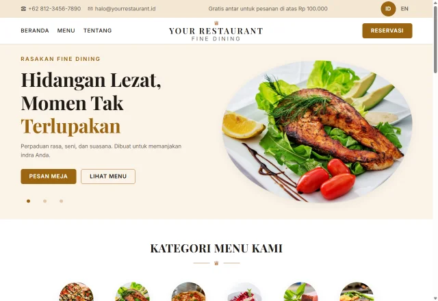
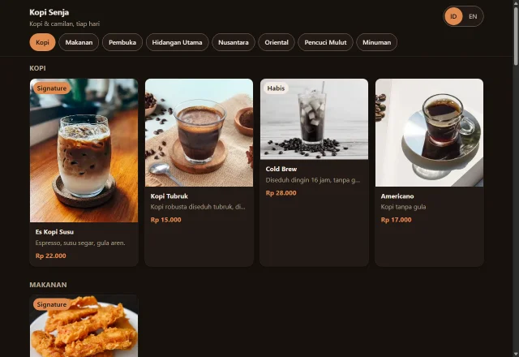

Bisa dicobaKlasik Fine Dining
Elegan dan hangat: emas di atas krem, foto bulat, carousel. Cocok untuk restoran.
Coba desain ini →
Bisa dicobaMenu Sederhana (Siap Pakai)
Desain yang sudah kita bangun: cepat, dark mode otomatis, admin & QR. Inilah yang live.
Coba desain ini →
Segera
Savoria Kitchen
Kasual dan cerah: ikon kategori, kartu bersih, aksen bata. Bergaya bistro modern.
Segera hadir
Segera
Menu Poster Hijau
Satu halaman bergaya poster: latar hijau tua, foto hidangan tersebar, kesan artistik.
Segera hadir
Segera
Dolce Dessert
Fokus pencuci mulut: foto besar berdampingan, tata letak majalah, dua warna tegas.
Segera hadir